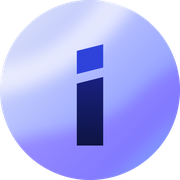

A · Giấy
iOS 180
Android tròn 180
48 · nền sáng
48 · nền tối
i lụa màu trên nền giấy ấm, vệt khói lụa chéo.
Trượt: trong mặt nạ tròn Android là chữ i xanh giữa vòng tròn trắng, trùng đúng hình ⓘ.
B · Lụa vắt ra ngoàiĐề xuất
iOS 180
Android tròn 180
48 · nền sáng
48 · nền tối
i lớn lệch phải; thân thành dải lụa sáng vắt cong ra khỏi khung, nền lụa cobalt.
Đề xuất. Hình bị cắt ở mép, không có viền chữ i nhỏ giữa ô nên không đọc thành ⓘ; thấy ngay chất lụa; 48px vẫn ra chữ i.
C · Nền lụa
iOS 180

Android tròn 180
48 · nền sáng
48 · nền tối
i mực-cobalt trên nền gradient lụa periwinkle, tím, hồng.
Đỡ hơn A nhờ nền nhiều sắc, nhưng vẫn là chữ i nhỏ đứng giữa vòng tròn → còn nguy cơ ⓘ; nền nhạt chìm trên hình nền sáng.